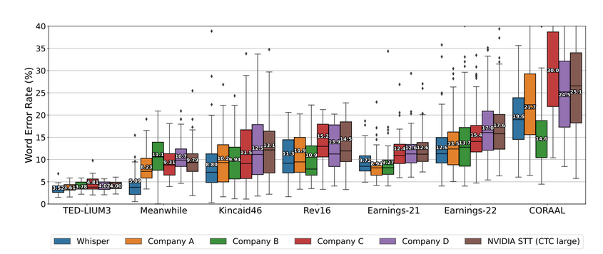
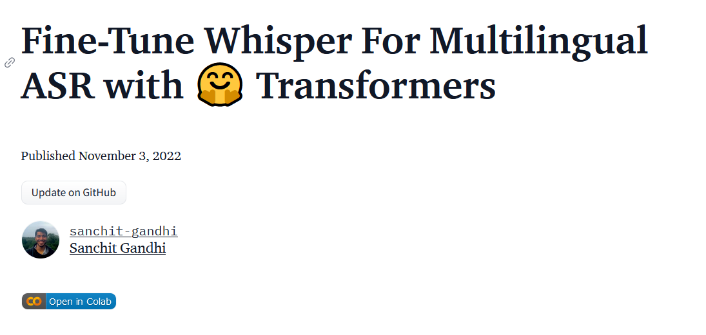
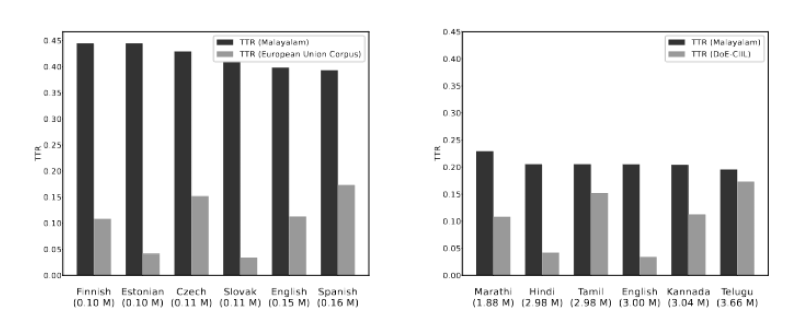
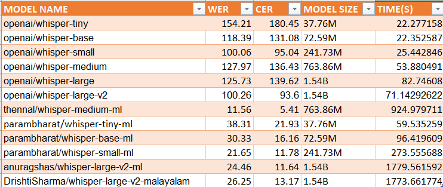
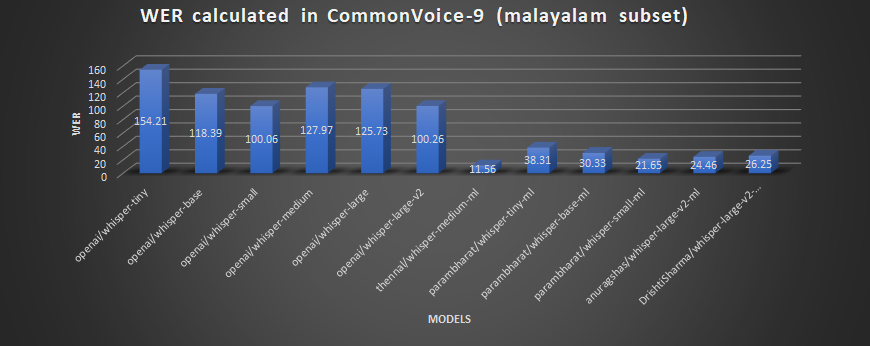
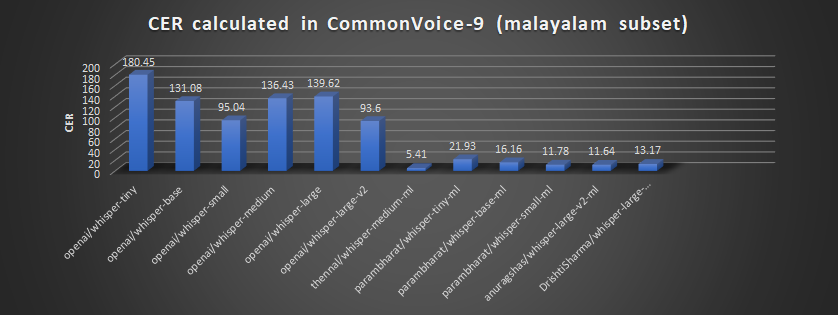
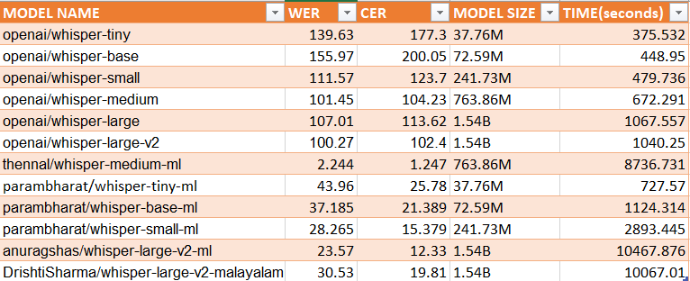
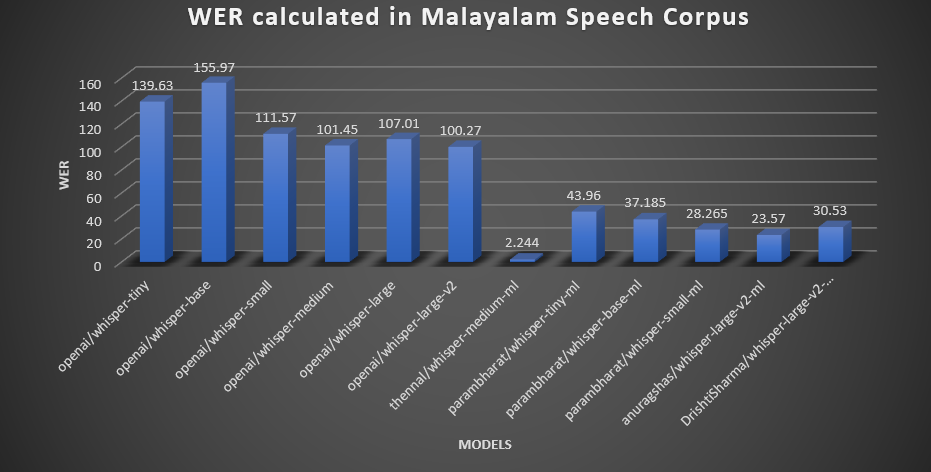
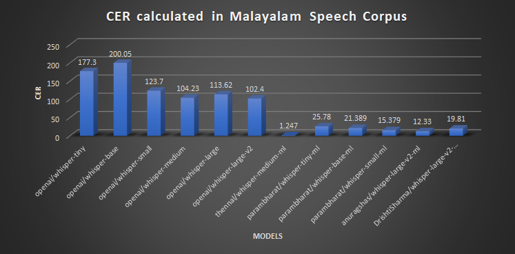

OpenAI Whisper and it’s amazing power to do fine-tuning demonstrated on my mother-tongue
📍 FOSS Meetup, Kochi @ KeyValue, Smart Kochi.
Saturday, June 24, 2023
Outline
- What is OpenAI Whisper?
- Features of OpenAI Whisper
- What is Fine-tuning and how to fine-tune Whisper?
- About my mother tongue
- Methodology of benchmarking whisper models
- Results on benchmarking Whisper model
- Future Ideas & Conclusion
$whoami
- AI Engineer & Team Lead @ sentient.io
- Volunteer @ Swathanthra Malayalam Computing(SMC)
- FOSS enthusiast
- Not affiliated to OpenAI
Disclaimer
- This talk is not generated.
- If I use something generated I will explicitly mark as from an LLM.
OpenAI Whisper

- I think Whisper1 is the most
under-rated modelreleased by OpenAI. - It was open-sourced on September 21, 2022 by releasing the inference code and pre-trained model weights.
About OpenAI Whisper Model
- Whisper is a computer program which can listen to people talking and write down what they say. (Automatic Speech Recognition Model)
- Whisper can understand people speaking different languages and can even translate what they say into English. (Supports transcription and translation to English)
Whisper Models
| Size | Parameters | Required VRAM | Relative speed |
|---|---|---|---|
| tiny | 39 M | ~1 GB | ~32x |
| base | 74 M | ~1 GB | ~16x |
| small | 244 M | ~2 GB | ~6x |
| medium | 769 M | ~5 GB | ~2x |
| large | 1550 M | ~10 GB | 1x |
English Speech Recognition
Whisper is competitive with state of art commercial and open source systems. Diagram from whisper research paper p.9
Multi-lingual Speech recognition
- Whisper model is trained on 99 languages
- OpenAI Whisper API supports just 57 languages as some languages performance are not really good.
Runs in almost any device
- Since Whisper followed the open source route, whisper.cpp developed by Georgi Gerganov which is a port of OpenAI’s Whisper model in C/C++.
- It supports the below platforms:
- Mac OS (Intel and ARM)
- iOS
- Android
- Linux/Free BSD
- Web Assembly etc.
Awesome community plugins
- Word-level time stamps with whisper-timestamped,whisperX etc.
- Fine-Tune Whisper is achieving SOTA in lot of languages
- Speaker diarization
- Audio classification using OpenAI’s Whisper
- 4x faster with same accuracy using faster-whisper
What is fine tuning?
Given a pre-trained model, which is a large model which is trained on a very specific task. If we want to fit it into our specific dataset we will train and use the pre-trained model to build a new model which works very well for our task.

Picture from fast.lesson covering steps in finetuning a text classifier model
Fine tuning is still relevant
What are steps for fine-tuning Whisper?
What are steps for fine-tuning Whisper?
- Preparing Environment
- Load dataset
- Prepare Feature Extractor, Tokenizer and Data
- Training and evaluation
- Building a demo(optional)
About Malayalam
- Malayalam is my mother tongue.
- Native speakers: 38+ million.(according to 2011 census)
- Spoken in: Kerala, Lakshadweep, Puducherry, wherever Malayalees are living.
Malayalam is morphologically complex language

Whisper Event
- HuggingFace Team conducted a whisper fine tuning event for 2 weeks from 5th December 2022 to 19th December 2022. The results were out on 23rd December 2022.
- The goal was to to fine-tune the Whisper model to build state-of-the-art speech recognition systems in the languages of our choice 🗣
Malayalam performance in whisper paper
| Model | WER |
|---|---|
| tiny | 102.7 |
| base | 122.9 |
| small | 104.8 |
| medium | 137.8 |
| large-v1 | 107.1 |
| large-v2 | 103.2 |
Malayalam models produced in Whisper Event
- For the language Malayalam, the results are as follows:
Malayalam models performance in whisper event according to leaderboard
Winning models in Malayalam in Whisper Event
- The winning model for Common voice:
thennal/whisper-medium-ml - The winning model for Fleurs:
parambharath/whisper-small-ml
I was not convinced
I was sceptical about the winning models becuase of:
- Achieving 11% WER in Malayalam is astonishing.
- In Malayalam there is not even a single yard stick to compare. Most of previous works were done in proprietary datasets and not open-sourced.
- Malyalam is a morpohologically complex language. So even achieving 30% WER is a big deal.
I was not convinced
- Didn’t trust the Hugging Face way of evaluating models.
thennal/whisper-medium-ml model card readme
I was not convinced
- Didn’t trust the Hugging Face way of evaluating models.
Last commit in thennal/whisper-medium-ml
Objective of my benchmarking
- To test whether 10% WER was possible in available academic datasets.
Datasets
- Common Voice 11 malayalam subset
- SMC Malayalam Speech Corpus
Metrics for evaluating ASR models
- ASR evaulation relies on comparission between ground-truth and ASR output.
- Common metrics for ASR evaluation which are popular and good enough1 are :
1. Word Error Rate(WER)
2. Character Error Rate(CER)
Methodology for benchmarking
- Create as a python library so further whisper-based transformer models can be benchmark.
- Calculate WER, CER, model size and time taken to benchmark the model for the listed datasets.
- Build a reproducible approach, so results of benchmarking is stored as dataset.
I wanted to build something new
- New github project for Malayalam ASR Benchmarking

Time for a new adventure
Libraries I used for benchmarking
Dependencies:
- transformers
- datasets
- jiwer
- whisper_normalizer
numerize pandas librosa soundfile
Development library:
- nbdev
- Jupyter Lab
Loading the dataset for benchmarking
def load_common_voice_malayalam_dataset():
dataset = load_dataset(
"mozilla-foundation/common_voice_11_0",
"ml",
split="test"
)
dataset = dataset.cast_column("audio", Audio(sampling_rate=16000))
dataset = dataset.map(normalise)
dataset = dataset.filter(is_target_text_in_range, input_columns=["norm_text"])
return datasetBenchmarking a particular model weight in common voice
Evaluating benchmarking code
def evaluate_whisper_model_common_voice(
model_name: str, # The model name
werlist: List[float], # WER List
cerlist: List[float],# CER list
modelsizelist: List[str], # model size list
timelist: List[float], # time(s) list
bs:int =16, # batch size. Default value is 16.
)->None:
whisper_asr = pipeline(
"automatic-speech-recognition", model=model_name, device=0
)
dataset = load_common_voice_malayalam_dataset()
predictions = []
references = []
start = time.time()
for out in whisper_asr(data(dataset), batch_size=bs):
predictions.append(normalizer((out["text"])))
references.append(normalizer(out["reference"][0]))
end = time.time()Calculating WER, CER
...
df = pd.DataFrame({"predictions": predictions, "ground_truth": references})
df["model_name"] = model_name
df["wer"] = df.apply(lambda row: wer(normalizer(row["ground_truth"]), normalizer(row["predictions"])), axis=1)
df["cer"] = df.apply(lambda row: cer(normalizer(row["ground_truth"]), normalizer(row["predictions"])), axis=1)
df["total_time"] = end-start
rwer = wer(references, predictions)
rwer = round(100 * rwer, 2)
werlist.append(rwer)
print(f"The WER of model: {rwer}")
rcer = cer(references, predictions)
rcer = round(100 * rcer, 2)
cerlist.append(rcer)
print(f"The CER of model: {rcer}")Calculating model_size and storing as a dataset
...
print(f"The model size is: {get_model_size(whisper_asr.model)}")
modelsizelist.append(get_model_size(whisper_asr.model))
df["model_size"] = get_model_size(whisper_asr.model)
save_name = model_name.split("/")
print(save_name)
df.to_parquet(f"{save_name[0]}_{save_name[1]}_commonvoice.parquet")
clear_gpu_memory()Benchmarked models
Started with 6 fine-tuned models in Malayalam and compared it with 6 model versions released by OpenAI.
- thennal/whisper-medium-ml
- parambharat/whisper-tiny-ml
- parambharat/whisper-base-ml
- parambharat/whisper-small-ml
- anuragshas/whisper-large-v2-ml
- DrishtiSharma/whisper-large-v2-malayalam
Results on benechmarking in Common Voice dataset
Output from benchmarking tool
WER in Common Voice dataset
Word Error Rate in Common Voice-9 test split
CER in Common Voice dataset
Character Error Rate in Common Voice-9 test split
Results on benechmarking in Malayalam Speech Corpus dataset
Output from benchmarking tool
WER in Malayalam Speech Corpus
Word Error Rate in MSC
CER in Malayalam Speech Corpus
Character Error rate in MSC
Links to Project
Github project
https://github.com/kurianbenoy/malayalam_asr_benchmarking
Links to Project
Benchmarking results
Results on SMC Malayalam Speech corpus
https://huggingface.co/datasets/kurianbenoy/
malayalam_msc_benchmarking
Results on Common Voice 11
https://huggingface.co/datasets/kurianbenoy/
malayalam_common_voice_benchmarking
Future Ideas for Benchmarking
- Something very similar to OpenLLM Leaderboard with results of latest malayalam speech models.
- Should include results for Kaldi, Meta’s MMS, Wav2Vec etc.
Open LLM leaderboard in huggingface spaces
Conclusion
- In Malayalam we have achieved phenomenal results for fine tuned whisper models.
- The best model after benchmarking is:
thennal/whisper-medium-ml - I think their seems to be a good ASR model suitable for production use-cases.
- You can also do it in your own language especially if it is a low resource language.
Thanks to
- OpenAI team - Alec Radford, Jong Wook Kim, Christine McLeavey etc. other authors of Whisper paper
- Creators of CTranslate2 and faster-whisper - Guillaume Klein
- HuggingFace team - Sanchit Gandhi, Nicolas Patry, Vaibhav Srivastav etc.
- Kavya Manohar
- Santhosh Thottingal
- Thennal D K
- AbdulMajedRaja RS
- Georgi Gerganov
- Ramsri Goutham
- Wayde Gilliam
- Other members in SMC.
- Jarvis Labs
Kurian Benoy || OpenAI Whisper and it’s amazing power to do fine-tuning demonstrated on my mother-tongue